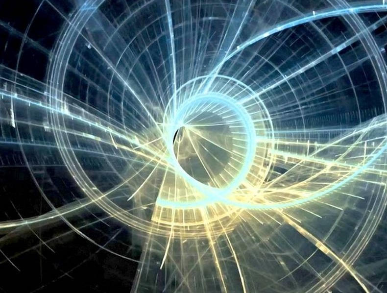
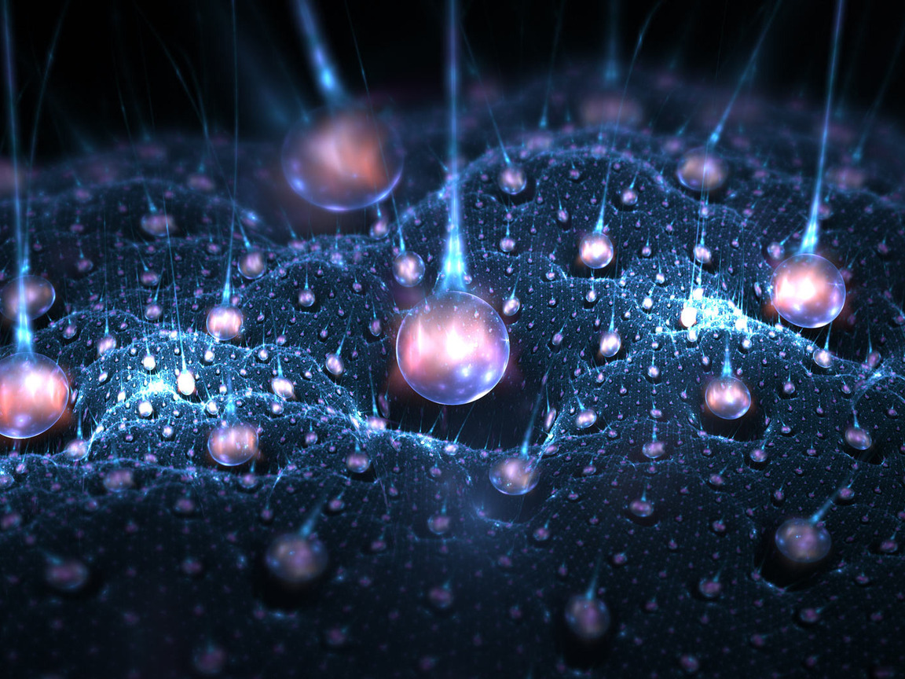
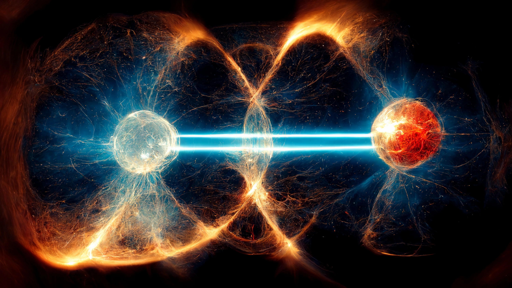
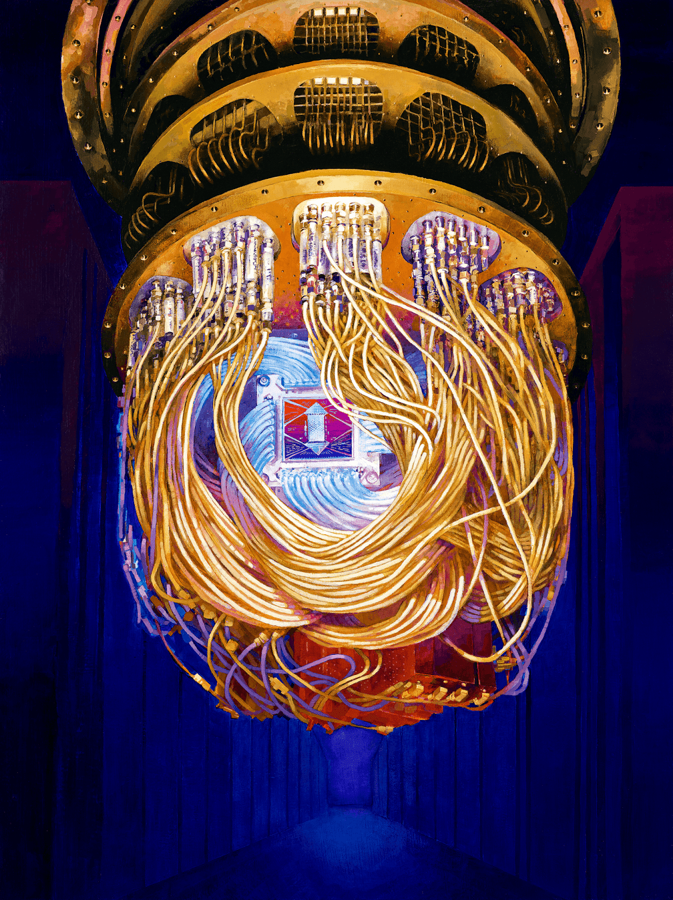

Кубит вместо бита
Квантовый компьютер — вычислительное устройство, которое использует явления квантовой механики для передачи и обработки данных. Квантовый компьютер оперирует не битами (способными принимать значение либо 0, либо 1), а кубитами, имеющими значения одновременно и 0, и 1. Теоретически это позволяет обрабатывать все возможные состояния одновременно, достигая существенного преимущества (квантового превосходства) над обычными компьютерами в ряде алгоритмов.
Квантовые компьютеры для вычислений используют такие свойства квантовых систем, как суперпозиция и запутанность. В суперпозиции квантовые частицы представляют собой комбинацию всех возможных состояний, пока не произойдет их наблюдение и измерение. Запутанные кубиты образуют единую систему и влияют друг на друга. Измерив состояние одного кубита, возможно сделать вывод об остальных. С увеличением числа запутанных кубитов экспоненциально растет способность квантовых компьютеров обрабатывать информацию.


Особенности
Квантовый компьютер работает на вероятностном принципе. Его результатом работы является распределение вероятностей возможных ответов, наиболее вероятный ответ обычно является лучшим решением. За счёт небольшого увеличения операций в алгоритме можно сколь угодно приблизить вероятность получения правильного результата к единице. Квантовые алгоритмы, представляющие собой классический алгоритм, задающий последовательность операций с кубитами, выполняются значительно быстрее, чем их аналоги на обычных компьютерах. Проблема заключается в том, что далеко не к каждому алгоритму на обычном компьютере можно подобрать квантовый, что приводит к узкой специализации

Из наиболее известных квантовых алгоритмов можно выделить три: алгоритм Шора (разложения числа на простые множители), алгоритм Гровера (решение задачи перебора, быстрый поиск в неупорядоченной базе данных) и алгоритм Дойча-Йожи (ответ на вопрос, постоянная или сбалансированная функция).
Применение
Благодаря огромной скорости разложения на простые множители квантовый компьютер позволит расшифровывать сообщения, зашифрованные широко применяемым криптографическим алгоритмом RSA. До сих пор этот алгоритм считается сравнительно надёжным, так как эффективный способ разложения чисел на простые множители для классического компьютера в настоящее время неизвестен. Для расшифровки нужно разложить на два простых множителя число длиной в сотни цифр (даже для суперкомпьютеров выполнение этой задачи заняло бы в сотни раз больше времени, чем возраст Вселенной). Благодаря квантовому алгоритму Шора эта задача становится вполне осуществимой, если квантовый компьютер будет построен. В связи с этим особую актуальность приобретают исследования по постквантовой криптографии — криптографическим алгоритмам, обеспечивающим конфиденциальность в условиях квантовых атак.
Квантовое машинное обучение позволяет манипулировать большими объёмами данных за один проход и моделировать нейронную сеть экспоненциального размера. Предполагается, что с помощью квантовых компьютеров станет возможно точное моделирование молекулярных взаимодействий и химических реакций. Химические реакции являются квантовыми по своей природе. Для классических компьютеров доступен обсчёт поведения только относительно простых молекул. По прогнозам экспертов, моделирование на квантовых компьютерах открывает новые перспективы для развития химической отрасли, в частности при создании лекарств.

Квантовая телепортация

Квантовая телепортация — передача квантового состояния на расстояние при помощи разъединённой в пространстве запутанной пары и классического канала связи, при которой состояние разрушается в точке отправления при проведении измерения и воссоздаётся в точке приёма.
Отправитель и получатель заранее создают пару квантово-запутанных частиц. Когда отправитель совершает измерение, имеющее четыре возможных исхода, над системой из двух частиц, он получает одно из 4 значений измеряемой величины. После этого сцепленность частиц разрушается и частица оказывается в некотором определённом квантовом состоянии. Именно в этот момент происходит как бы «передача» «квантовой части» информации. Однако восстановить передаваемую информацию пока невозможно. Для восстановления необходимо чтобы отправитель сообщил получателю по обычному классическому каналу результат своего измерения. По законам квантовой механики получается, что, имея результат измерения, проведённого над парой частиц, получатель сможет совершить необходимое преобразование над состоянием своей частицы, передав информацию, которую перехватить принципиально невозможно: если «злоумышленник» попытается проследить за эволюцией запутанной пары, то он тут же разрушит её запутанность.
Реализация
Построение квантового компьютера в виде реального физического прибора является фундаментальной задачей физики XXI века. Основные проблемы, связанные с созданием и применением квантовых компьютеров: необходимость обеспечить высокую точность измерений и защиту от внешних воздействий (включая передачу полученных результатов), которые могут разрушить квантовую систему или внести в неё искажения.
Чем больше кубитов находятся в связанном состоянии, тем менее стабильной является система. Для достижения «квантового превосходства» требуется компьютер со многими десятками связанных кубитов, работающими стабильно и с малым числом ошибок. Вопрос о том, до какой степени возможно масштабирование такого устройства (так называемая «проблема масштабирования»), является предметом новой интенсивно развивающейся области — многочастичной квантовой механики. На данный момент квантовый процессор с самым большим количеством кубитов - IBM Osprey с 433 кубитами.
